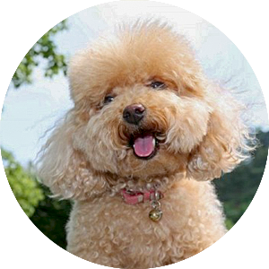

Собака породы пудель

Интересные факты:
- Официально страной происхождения считается Франция. Во Франции эта порода собак зовется caniche, от фр. cane — «утка». Впрочем, вошедшее в широкий обиход название породы произошло от нем. puddeln — «плескаться в воде».
- Считается, что собаки выводились для охоты и предками породы были охотничьи собаки по водоплавающей дичи. Это подтверждает тот факт, что пудели любят воду и охотно подают из нее брошенные игрушки. В то же время у пуделей сохранились врожденные способности пастуших собаках.
- Порода известна в Европе с XV-XVI веков и была чрезвычайно популярна при дворах европейских и русских монархов. Примечательно, что с тех времен внешность породы практически не изменилась.
- В XVIII веке крупные пудели активно использовались в военных действиях, в основном для поиска раненых и обеспечения полевой связи.
- В настоящее время пудели относятся преимущественно к группе декоративных собак. Порода занимает второе место в рейтинге самых умных пород.
Разновидности
Пудели дружелюбны, энергичны и прекрасно поддаются дрессировке вне зависимости от размеров.
По величине пудели деляться на:
- больших (королевских) от 40 до 55 см в холке;
- средних от 35 до 45 см в холке;
- карликовых до 35 см в холке;
- тоев до 28 см в холке.
Внешний вид
Пудели производят впечатление утонченных животных, с необычной кудрявой шерстью, на длинных ногах, с вытянутым носом и любопытным взглядом.
Окрас
Общепризнанными окрасами породы считаются следующие шесть:
- черный
- белый
- серебристый
- коричневый (шоколадный)
- абрикосовый
- красный (темно-абрикосовый)
К нестандартным относяться окрасы: черно-белый (арлекин), тигровый, соболиный, серебристо-бежевый и др.
Классическими окрасами считаются черный и белый.
Черный окрас породы считается лучшим по качеству шерсти. Кроме того, у собак данного окраса обязательно карие глаза, черные мочка носа, обводка глаз, губы и когти.
Шерсть
Немаловажное достоинство пуделя — это его шерсть. По характеру шерсти пуделей разделяют на курчавых и шнуровых.
У пуделей отстутсвует сезонная линька, поэтому их шерсти требуется особый уход:
- регулярное вычесывание примерно 2 раз в неделю
- еженедельное купание в теплой воде с шампунем
- ежемесяная стрижка (гигиеническая в домашних условиях или салонная) для всех без исключения разновидностей породы
Рекомендуется стричь шерсть свыше 25 мм в длину.
Груминг
У больших пуделей шерсть густая и объемная, поэтому подстригать собак нужно часто. Самые популярные для них стрижки — «Континенталь» и «Английское седло».
Для участия в выставках допускаются 4 варианта стрижек: «Лев», «Модерн»,«Английское седло», «Папи».
Для собак, не участвующих в выставках, используют и другие, более практичные, стрижки: